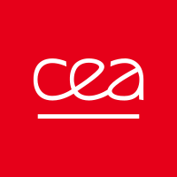
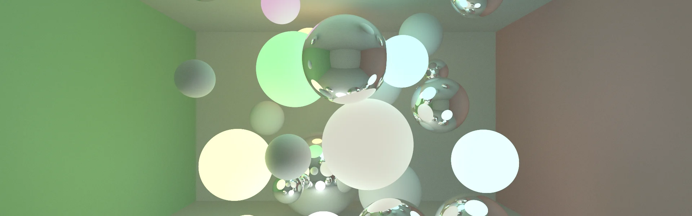
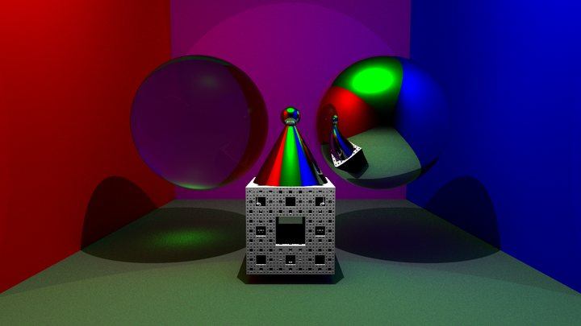
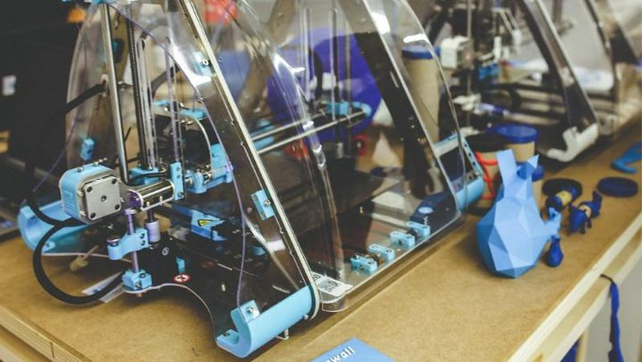

01–07/2025

CEA SaclayStage de fin d'études · R&D en rendu 3D
Des reflets plus réalistes en Gaussian Splatting pour la réalité virtuelle.
C++CUDAPyTorch
En savoir plus →
Maillages, textures, caméras, lumières, shaders et rendu différé.

Path tracer avec BRDF à microfacettes, géométrie SDF et CSG, accéléré par BVH.
Fluide SPH incompressible avec turbulences, d'après un article de recherche.
Sweep and Prune, BVH et test triangle-triangle de Möller.
Kernels CUDA pour une carte de hauteur ; recherche de sous-image MPI et OpenMP.
Génération de visages, super-résolution et détection de photos recapturées d'après un article de recherche.
Suivi de contour, polygonisation et mesures de forme.

Découpe en couches : Delaunay et rastérisation GPU. Projet inachevé.

CEA SaclayDes reflets plus réalistes en Gaussian Splatting pour la réalité virtuelle.
Correction d'algorithmes de géométrie dans un logiciel en production.
Université de Limoges · informatique graphique
Université de Limoges
Centres d'intérêt : trompette au conservatoire (2011-2019), trésorier de l'association étudiante du master, escalade.